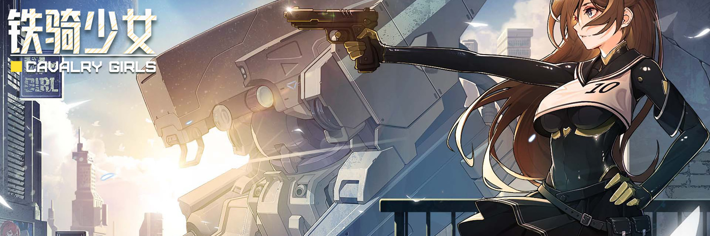

01. 前言简介

背景设定: 游戏发生在一个架空的未来世界, 人们发现某些人群拥有感应和操控"玉"的异能, 能工巧匠们开始尝试将玉打造成复杂的器械, 以此为契机, 仿生机械革命提前到来了, 各种各样的仿生器械随之出现, 这当然也包括了用于战争的巨型兵器既"铁骑", 不同势力也因玉矿开采权而产生了纷争, 而游戏的开端便是源于"联合帝国"与"贸易联盟"在半岛的开采权冲突, 战火逐渐蔓延, 没有丝毫缓和的迹象…
故事起源: 玛丽原本是生活在联合帝国境内的普通少女, 由于国家在战事中逐渐失利而战力紧张, 政府开始强迫异能者必须进入军队服役, 而玛丽的平淡生活便在觉醒了异能后被彻底打破了, 为了保障家人的安全, 他被强制送入军校学习驾驭铁骑, 毕业不久后他就被派上了战场, 开始负责某道防线的守卫, 他得坚守一百天, 等待大部队到来, 但腐朽的帝国政局黑暗, 敌势汹涌, 他究竟能否撑到援军的到达?
02. 剧情模式
新手起步: 铁骑少女拥有多种游玩模式, 它们的重点和玩法都各有差异, 如果你是首次接触该游戏, 建议就从剧情模式开始, 因为它有引导内容, 游戏的各项机制也会随着天数推进而逐步解锁, 这有利于我们渐进式地去熟悉每个功能, 从而避免一次性面对太多概念而头昏脑胀, 该模式有四个难度, 分别是"故事/正常/硬核/残酷", 难度是逐步递增的, 你得先通关过一次故事或者正常, 才能挑战硬核或者残酷:
01. 故事难度:
便于体验剧情, 可以使用控制台(整备界面能获得任意物品/训练场可调出任意敌人), 允许回档(回到1/3/9天前), 不能获得成就;
02. 正常难度:
常规流程体验, 敌人相较于故事难度有些许的强化, 该难度下无法使用控制台, 但依然允许自由地回档, 也可以正常地获得成就;
 03. 硬核难度:
03. 硬核难度:
你必须通关过一次故事难度或正常难度才可以选择该难度, 无法使用控制台, 无法回档(但还是可以正常SL), 敌人会变得很强大;
04. 残酷难度:
你必须通关过一次故事难度或正常难度才可以选择该难度, 在硬核的基础上又进一步增强了敌人, 基地的运营也变得更有难度了;
————
有限提示: 新手指南是 XJ 在完成了所有的数据页面后才编撰的, 由于许多机制已经在游戏数据的页面中解释得很详细, 所以指南可能就不会再进行深入的剖析了(毕竟重复也没有意义), 某些细节会被一笔带过, 但 XJ 会尽量附上相关的链接, 以便当你想深入了解时, 可以尽情探索, 下面是剧情模式的一些提示和总结, 它们当然无法解答你的所有疑惑, 不过了解一番, 有助于帮你快速构筑起一个基本概念:
Tip01: 我们在该模式下需要坚守的天数为 100, 不过每隔一段时间就会有休息日(但无资金和荣誉收益), 细节可查阅 剧情模式.html;
Tip03: 如果你在教学关卡中尝试攻击教练机, 系统将会提示"检测到不轨行为", 如果你把教练机给打爆了, 游戏将会直接结束;
Tip02: 每天的整备阶段发生于当天战斗结束后, 也就是说, 我们指的某天, 和当天界面顶部显示的天数是完全对应的;
Tip04: 休息日可以让驾驶员呆在宿舍休息, 但也可让他们去执行各种特殊任务以赚取收益(不过这会让他们压力激增);
Tip05: 该模式下初始就只有玛丽, 其余的驾驶员会在第 9/20/38/54 天分别入队, 但他们加入的顺序是随机的(随机二选一);
Tip06: 尽管驾驶员有能力差异, 他们的铁骑也有性能区别, 但并不存在谁就特别强的情况, 所以不用在意顺序, 反正到最后都会入队的;
Tip07: 除了故事难度, 其余难度的敌人都得到了增强, 细节可查阅 奖惩机制.html # 01.难度强化(由挑战模式的"对应剧情"属性控制);
Tip08: 不同难度下的战后收益和税费支出也都有差异, 细节可查阅 剧情模式.html(资金奖励/荣誉奖励) 以及 费用计算.html;
Tip09: 该模式下的机制是逐步解锁的, 先后顺序和具体日期可查阅 剧情环境.html(硬核和残酷难度的数据位于 P02);
Tip10: 剧情模式有"结束/叛逃/革命"共三个结局, 革命又被称为"真结局", 但是它只能在硬核或残酷难度下才能达成;
Tip11: 相同条件下, 如果是故事或正常难度, 就只能达成叛逃的结局, 如果既不是革命也不是叛逃的结局, 那就是保底的结束;
Tip12: 革命要求你配合叛军完成系列任务, 自行探索固然也是种乐趣, 但如果不介意被剧透, 也可查阅 剧情环境.html # 02.额外拓展;
03. 挑战模式
最佳拍档: 你可以选择任意 2 位驾驶员组队开局, 在指定地点歼灭敌军, 至少进行第一场 Boss 战后, 结束战斗就能够得到"驻防点", 驻防点可用来进行全局强化, 你也可以增加敌人的强度以获得更多驻防点, 该模式的一大特点, 就是允许双人游玩(不过 2P 需要用游戏手柄控制, 当然, 如果你没手柄或没朋友, 也可以将 2P 委托给 AI 控制):
Tip01: 在该模式下需要坚守 38 天, 由于初始就会解锁所有游戏的机制, 允许合成装备, 所以开始难度就会比较高;
Tip02: 如果你只派队友上场, 那么能控制队友的铁骑, 如果你自己也上场, 就只能控制自己的铁骑, 队友的铁骑会由 AI 接管;
Tip03: 与剧情模式的防守战不同, 挑战模式的战场中并没有大门需要防守(城防界面也就没有大门), 只要将战场中的所有敌人歼灭即可;
Tip04: 可在战场中按 Tab 打开战略面板, 点击左下角按钮对友军下达指令, 目前有四种指令, 专注方向/防守地点/跟随移动/自由行动;
Tip05: 在战场中央有两层沙袋, 推荐是下达"防守地点"指令, 让队友呆在沙袋中心, 有沙袋的帮助, 可以极大提升队友生存率;
Tip06: 由于该模式并没有忠诚度的概念, 所以在战场中下达指令给队友时必定成功, 并不会出现队友违抗命令的情况;
Tip07: 尽管战场中央总会有两圈沙包, 但其实类似剧情模式, 该模式也有选择地图的事件, 战场上的元素也会有变化;
Tip08: 该模式没有脑负荷机制, 所以不能装修宿舍, 也不能装备饰品, 战场上用技能不会涨脑负荷, 但需要以荣誉收益为代价;
Tip09: 挑战模式的全局增益需要靠驻防点解锁, 而驻防点来源于在该模式下所坚守的天数, 细节可查阅 奖惩机制.html # 03.额外拓展;
Tip10: 挑战模式的采购部门和基建部门, 它们提供的物品选项并不会受到解锁天数的限制, 只要是价格允许范围内的东西, 都可以出现;
Tip11: 有好几个跟挑战模式相关的成就, 但不需要逐个完成, 只要完成了高等级难度的挑战, 则低难度的成就也会被同时解锁;
Tip12: 假日任务需要有驾驶员在基地才能获得收益, 但奖励人力或战略武器的情况除外, 即便基地没人也可得到收益;
————
外围强敌: 在该模式下, 初期就可能会出现武士或沙虫的外围阵地, 尽管外围阵地也不是非打不可, 但如果你眼馋收益, 以下是些小技巧, 首先是对付武士, 可用无视盾牌的光枪或光矛, 再以铁墙等障碍为掩护, 保持距离突刺对方, 其次是面对沙虫, 可用散弹枪或泵动炮等高伤害武器, 集中火力攻击对方护甲已破损的部位, 最后是尽量拖延, 这些外围阵地持续时间都比较长, 晚一天挑战就多一天时间准备;
04. 无尽模式
 永不落幕: 你可以选择任意 1 位驾驶员开局(该角色也会成为小队的队长), 进行防守大门的战斗(和剧情模式相同), 不过坚守的天数是无限的, 敌人在这个过程中会不断获得各种 Buff 增强, 你的运营也会受到各种 Debuff 削弱, 该模式的特点是能一直战斗下去, 直到你主动退役, 或者被敌人汹涌的攻势所淹没, 该模式支持 MOD 及调试工具:
永不落幕: 你可以选择任意 1 位驾驶员开局(该角色也会成为小队的队长), 进行防守大门的战斗(和剧情模式相同), 不过坚守的天数是无限的, 敌人在这个过程中会不断获得各种 Buff 增强, 你的运营也会受到各种 Debuff 削弱, 该模式的特点是能一直战斗下去, 直到你主动退役, 或者被敌人汹涌的攻势所淹没, 该模式支持 MOD 及调试工具:
tip01: 无尽模式以 40 天为一循环, 每隔几天就会强迫你选一个难度词条(三选一), 一个周期里需要选出九个词条;
tip02: 词条存在等级划分(越高影响就越大), 只有前一级词条都选完, 下一级词条才会出现, 词条会在选择后的第二天才生效;
tip03: 如果你能一直坚守下去, 那么大约会在第一百三十九天左右选完所有词条选项, 更多细节可查阅 奖惩机制.html # 01.难度强化;
tip04: 外勤任务和假日安排的奖励会随着循环周数而翻倍(第二周×2,第三周×3…), 但是任务和安排所增加的脑负荷并不会跟着一起增多;
tip05: 每个循环里会有两个驾驶员入队, 凑齐五人后, 入队事件会变成增加出战人数上限(需要 1000 资金和 1000 荣誉);
tip06: 尽管可以选择任意角色开局, 但从综合角度来讲, 选择玛丽开局是较为合适的, 毕竟他的游骑兵号普适性最好;
tip07: 与剧情模式相比, 该模式下队友不会赠送特殊家具, 在会议室召开"战后总结会议"也无法增加驾驶员能力上限;
tip08: 剧情模式下队长没有忠诚度, 也就没有忠诚度奖励, 但该模式下, 当所有的驾驶员都入队后, 队长也能得到忠诚度奖励;
tip09: 队长的忠诚度奖励, 和队伍里忠诚度最低那个队友同步(触发该队友的 LVN 励事件之后, 第二天也会触发队长的 LVN 奖励事件);
tip10: 该模式有个成就叫"永恒传奇", 要求坚守到第 150 天并退役, 还有个成就叫"屹立不倒", 要求最终战斗到第 100 场并退役;
tip11: 如果你坚守到第 150 天再展开最终战斗, 并连胜 100 场, 就可以一次性解锁以上这两个成就(相关低级成就也会解锁);
Tip12: 无尽模式也能像剧情模式那样, 在战场中临时切换以控制队友的铁骑(其他模式下在战场就只能给队友下指令);
————
性能问题: 在无尽模式的中后期, 你可能会面临铺天盖地的敌人, 或许你并不害怕这潮水般的攻势, 但你的电脑却未必顶得住, 假如你想缓解机器的卡顿问题, 以下是些实用小技巧, 首先是在设置界面, 将屏幕震动幅度和屏幕震动时长设定为最低, 其次是主动出击, 尽快剿灭敌人, 别让对方扎堆, 最后是尽量不用高爆类武器, 因为这类武器会在地面留下爆炸痕迹的贴图, 当贴图过多就会额外损耗许多资源;
05. 幸存模式
闯关求生: 你可以选择任意 1 位驾驶员开局, 在战场中展开类似于挑战模式那样歼灭战(无需防守大门), 每歼灭一定数量的敌军就可以进入下个关卡, 同时获得过关奖励并进行整备, 但在整备的阶段, 铁骑不会自动恢复 HP, 也无法自行制造装备, 你的所有收益均源于通过关卡后的随机过关奖励, 这是充满挑战性的玩法(该模式无法进行保存):
tip01: 幸存模式有 62 个关卡, 但每隔几关就会触发连续奖励, 此时关卡数会自动 +1 并多给一次物资选择机会;
tip02: 歼灭敌人即可积攒进度值, 值满了就能到下一关, 当 Boss 出现后必须将其歼灭, 否则就算进度条满了也无法到下一关;
tip03: 关卡所需进度值是逐步递增的, 具体取决于关卡的荣誉奖励, 细节可查阅 奖惩机制.html # 03.额外拓展(幸存模式的进度算法);
tip04: 由于装备获取随机且有限, 因此你最好一开始就定下武器的构筑方向, 如果三心二意, 很可能导致最后武器无法升级到最高等级;
tip05: 武器融合是提升武器上限的好方法, 但该模式物资紧缺, 所以最好把融合机会都留给毕业武器, 毕竟融合配件无法迁移;
tip06: 因为没有基建部也没有材料, 所以我们无法合成任何装备, 包括终极武器, 因此毕业武器只能在常规武器里选;
tip07: 可以保留一把毕业武器的初级版, 如果一直无法随机到目标武器来实现升级, 可以靠复制这把武器来解决问题;
tip08: 该模式下复制武器的次数不会重置, 所以越往后复制所需资金就越多, 操作需要慎重(右键武器后在右上角有复制按钮);
tip09: 除了昼夜阴晴的状态, 幸存模式还有清晨与黄昏, 虽然对战局并无实际影响(但实际上并没有真的日期变化, 只是在某一天循环);
tip10: 每隔几关就会触发固定奖励, 内容包括核心/荣誉/勋章/资金/恢复机体 HP 等选项, 细节可查阅 特殊遭遇.html(P04:假日安排);
tip11: 核心可升级无人机, 荣誉可解锁技能, 勋章可提升能力(武器维护的能力很重要, 因为资金来源有限, 没法经常修武器);
tip12: 过关奖励的物品, 价格会逐渐提升, 如果你初期没选择某种装备以解锁高级装备, 后期可能就没机会再解锁了;
————
挑战极限: 如果想挑战该模式的最高难度, 首选推荐是使用库罗库, 因为他的基础技能可以立刻恢复护盾, 甚至他还有恢复铁骑 HP 的技能, 这样你就不需要用固定奖励来恢复 HP 了(幸存模式没有脑负荷概念, 技能就随便用吧), 但记得别为他的铁骑安装纳米合金, 因为这会让治疗效果只剩 1/5, 即便挑战失败也无所谓, 你的每次尝试都会积累生存点, 生存点可换取各种增益, 过关的可能性会越来越高;
06. 潜入模式
影子战术: 扮演库罗库, 了解他的过去, 在有限的天数内完成任务并迎接最终挑战, 所有的任务均可选择歼灭敌军, 或采用秘密潜入完成, 该模式是游戏首个 DLC 既三叶草新增的内容, 玩法有些类似《盟军敢死队》或《赏金奇兵》, 富含隐蔽与暗杀的要素, 与该游戏其他刚正面的模式不同, 你需要的是谨慎以及算计, 但它也充满了惊险和刺激:
Tip01: 在该模式下你得坚守 39 天, 只有库罗库, 没其他队友, 大多时候都是外出执行任务, 阵地防守战反而较少;
Tip02: 潜入任务无需击杀所有敌人, 只要完成了任务目标即可撤离, 但击杀敌人可获得额外资金奖励, 所以有条件就尽量杀吧;
Tip03: 你不是非得采用潜行, 如果能正面打败敌人, 那也是可以的, 不过在任务中被发现会导致战后收益减少, 所以尽可以选择暗杀吧;
Tip04: ESC 菜单有自动爆破和自动暗杀的选项, 推荐开启"自动暗杀", 这样就不需要一边控制方向一边按住 F(这种操作难度真的很高);
Tip05: 被一个敌人发现, 警觉数会 +1(当被同个敌人再次发现, 警觉数不会再 +1), 此时可以远离敌人以消除对方的警戒状态;
Tip06: 被炮台发现不会导致警觉数上升, 但攻击炮台可能引起警觉, 所以最好先解决那些移动机体, 最后再处理炮台;
Tip07: 躲在树丛里可避免被敌人发现, 敌人视野可能比他们的探照灯更远(但我们蹲下后敌人视野就局限于探照灯了);
Tip08: 在面对多个敌人的时候, 最稳妥的打法就是丢震撼弹(投掷物)把敌人弄晕再暗杀, 如果震撼弹还在 CD, 可按 ALT 加速;
Tip09: 初期由于装备问题, 在防守战时很难直面敌军, 推荐是绕到敌人身后暗杀, 由于敌人会直扑大门, 警惕性较低, 所以操作并不难;
Tip10: 暗杀可 -99999 护盾或 -20000 HP, 有护盾时首次暗杀是破盾, 第二次才减 HP, HP > 20000 的敌人得暗杀多次才能击毙;
Tip11: 暗杀效率是可以被叠加的, 除了为匕首都安装上暗杀模块, 你还可以在整备人员界面右上角, 使用荣誉点换取刀刃饰品;
Tip12: 该模式下没有无人机系统(毕竟可能干扰暗杀), 也没有脑负荷系统(不过使用战场技能会扣除战后的荣誉收益);
————
决战技巧: 该模式下最后的 Boss 带有护盾(且护盾恢复速度特别快), 你几乎没有正面取胜的可能, 因此最佳选择依然是用震撼弹击晕再暗杀, 首次暗杀只能打破对方的护盾, 第二次暗杀才能削减对方的 HP, 但一次暗杀只能去掉他 HP 的 1/3 , 之后他就会重启护盾并召唤更多敌军追杀你, 此时你得尽量避开他, 让他从警戒模式再次进入搜索状态, 然后重复之前的击晕和暗杀, 反复操作三次就能取得胜利;